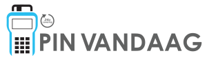

POS 
POS Pin Vandaag is an Odoo module designed to provide businesses
and organizations with a free and easy to use solution for
controlling their payment terminals
POS Pin Vandaag can manage the following terminals:
You can sign up for the module by sending an email to
helpdesk@pinvandaag.nl
and we will contact you as soon as possible.
For more information about us and what we do, please visit our website at
www.pinvandaag.nl.